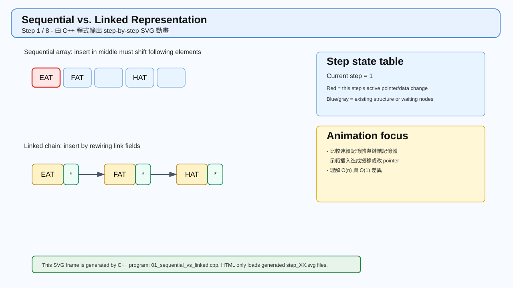
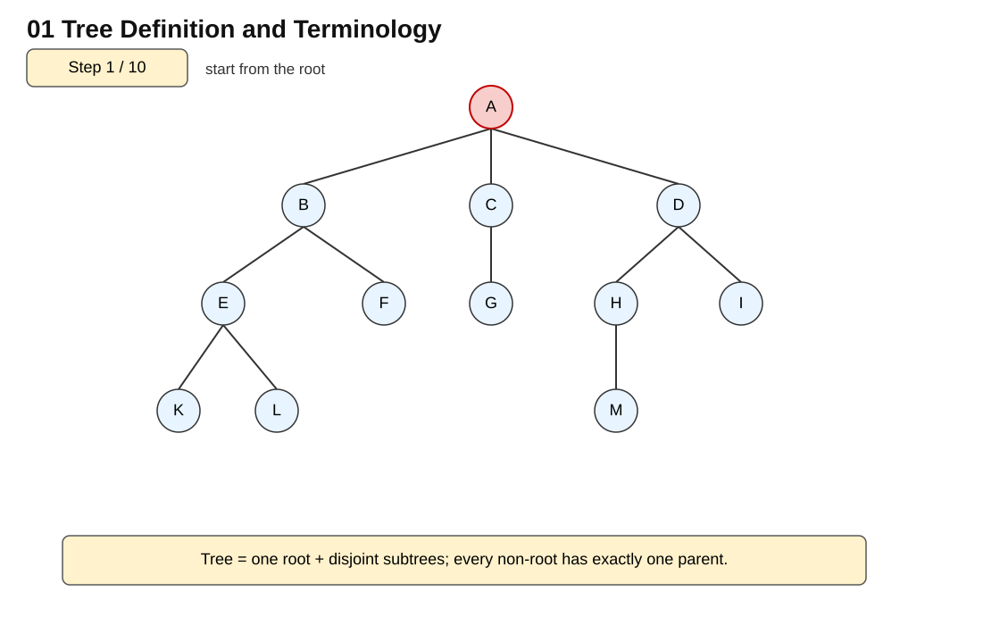
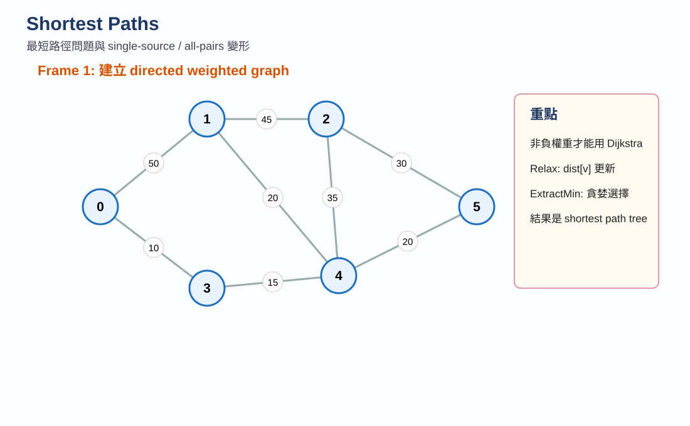

Chapter 4
Linked Lists
鏈結串列、單向串列、雙向串列與應用。
進入 lec4_HTML 首頁 →

Chapter 5A
Trees Part I
Tree、Binary Tree、Traversal、Threaded Binary Tree。
進入 lec5a_HTML 首頁 →

Chapter 5B
Trees Part II
Heap、Priority Queue、BST、AVL、Forest、Disjoint Sets。
進入 lec5b_HTML 首頁 →

Chapter 6A
Graphs Part I
Graph 基本概念、DFS、BFS、Connected Components、MST。
進入 lec6a_HTML 首頁 →

Chapter 6B
Graphs Part II
Shortest Path、Dijkstra、Bellman-Ford、Floyd、Topological Sort。
進入 lec6b_HTML 首頁 →

Chapter 7
Sorting
Bubble、Selection、Insertion、Heap、Merge、Quick Sort。
進入 lec7_HTML 首頁 →